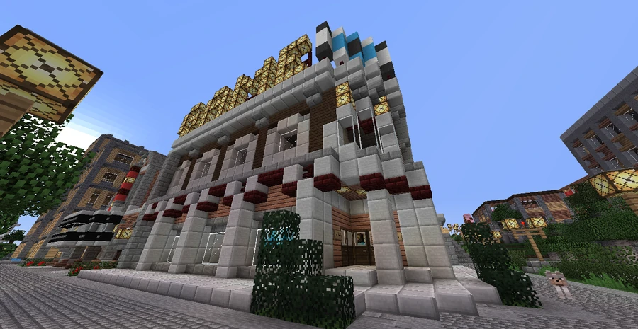

GameBros Arcade
A Broville arcade owned and operated by BroCORP's electronic entertainment division.
Location and building
GameBros Arcade, also written GameBro's Arcade, occupies the corner between Grand Broville Cinema and a SOLAR recruitment office. It is owned and operated by the electronic entertainment division of BroCORP.
The building has multiple levels: an assortment of arcade machines fills the ground floor, while the second floor provides living and office space. The game names include parodies of familiar titles, alongside names such as Polybius and Minecraft.



Available games
The recorded machine titles are:
- Salad Bar Defender
- Polybius
- Elderly Fighters
- Movie:The Game
- Mammary Manipulator
- Asperg Quest
- War Toads
- Galacticus
- Hobospien
- Laundromat Simulator
- Cave Explorer
- Dark and Gloomy Dungeon Game About Generic Fantasy Things
- Butt Blasters
- Toke'n Machine
- Prize Claw
- Gimmick Claw
- Super Generio Bros.
- Assterdroids
- Clever Title
- Minecraft
- Superkyushin Fightinwarrior
- Orphan Assault
- Fairway Fisticuffs
- Clitoral Explorer
- Space Paranoids
See also
Sources and references
- v11.4.4 maps, signs, books and items World records
- GameBros Arcade · Broville Wiki Community archive
Text adapted and expanded from GameBros Arcade (contributors and history, revision 4473). Adapted text is available under CC BY-SA 3.0.